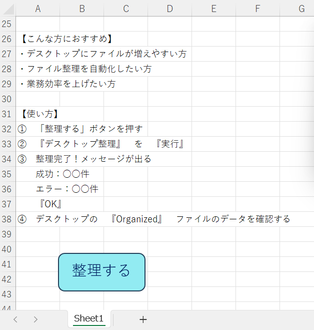
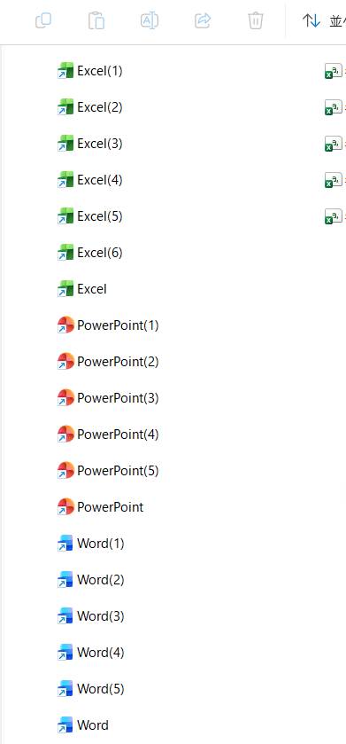
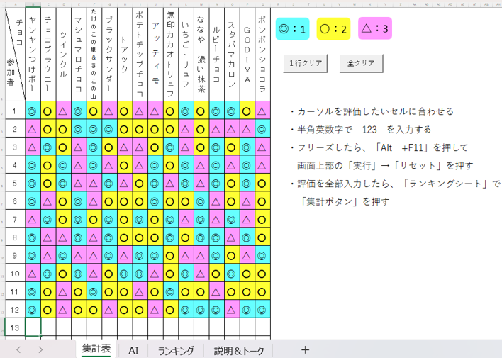
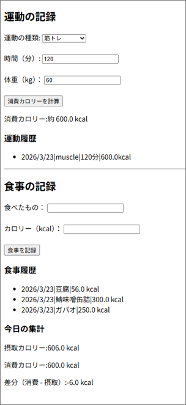
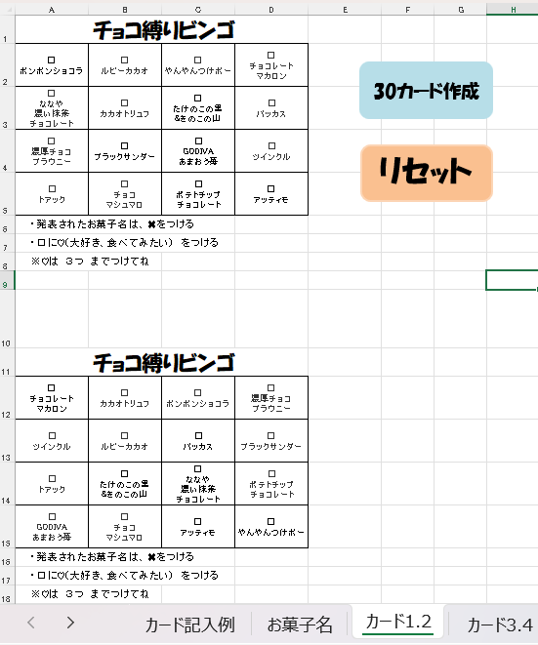
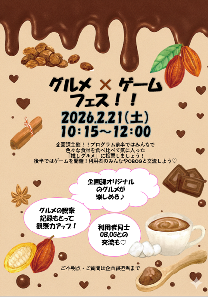
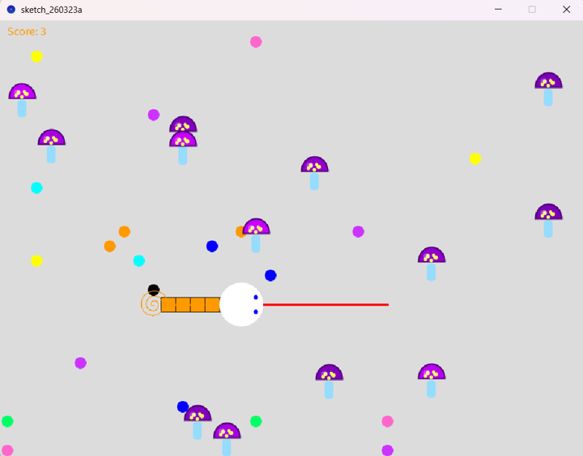
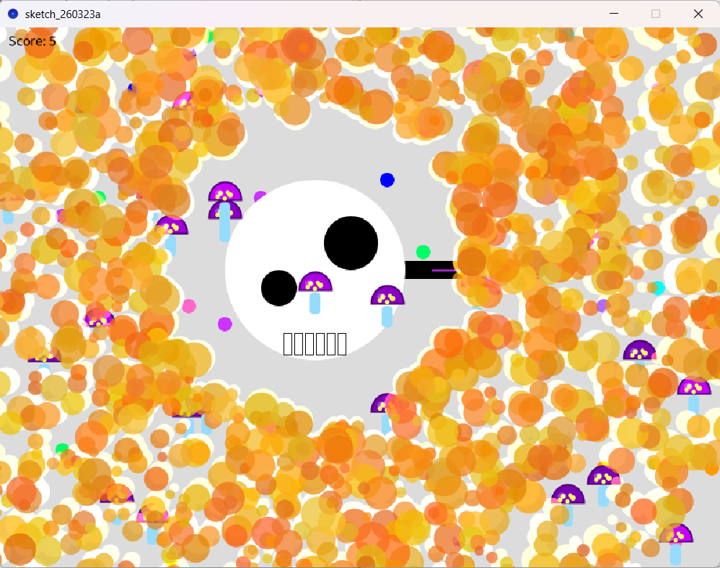
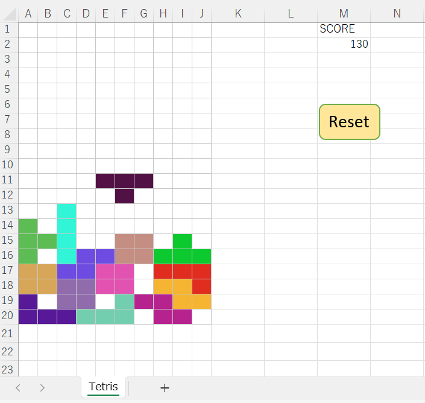

作品
デスクトップ整理ツール


使用技術：VBA
制作時間：約4時間
■ 制作背景
デスクトップにファイルが蓄積し、
・必要ファイルを探す時間が増える
・同名ファイル管理が煩雑になる
・手作業整理によるミスが発生する
という課題がありました。 そこで、
『ファイル整理を自動化し、業務効率を改善する』
ことを目的としてこのツールを開発しました。
■ 主な機能
・ファイル自動分類
・重複ファイル回避
・エラーログ管理
・デスクトップ整理自動化
■ 改善過程
①単純シンプル整理
②エラー時でも処理停止しない
③ログ管理による原因追跡
④重複対応（上書き防止機能）
⑤成功件数／失敗件数表示
⑥「整理する」ボタンを追加することによりVBA未経験者でもワンクリックで利用可能な構成に改善
⑦整理完了後に保存先フォルダを即時確認できるよう「Organizedフォルダを開く」導線を追加
ビンゴ集計ツール

使用技術：VBA
制作時間：約15時間
■ 制作背景
イベントにおけるビンゴ集計作業の手作業ミスを削減し、当日の運営負担軽減を目的として制作しました。
■ 工夫した点
手作業では約40分かかっていた集計作業を自動化し、約10分まで短縮して作業時間を75%削減しました。
また、参加人数の増減に対応できるよう設計し、イベント当日でも柔軟に運用できる仕組みにしています。
トレーニングアプリ

使用技術：Java
制作時間：約5時間
■ 制作背景
自身の筋力トレーニング管理を効率化するために制作しました。
■ 工夫した点
消費カロリーの自動計算機能を実装し、入力の手間を軽減しています。
また、カロリーが未入力の場合は、必要な情報をすぐに確認できるよう、
外部サイトへ遷移できる導線を設計しました。
■ 今後の展望
ユーザー目線での使いやすさや継続して利用しやすい設計を意識し、改善を重ねていく予定です。
ビンゴカード作成ツール

使用技術：VBA
制作時間：約5時間
■ 制作背景
イベント準備におけるビンゴカード作成の手間を削減するために制作しました。
■ 工夫した点
参加者20名を想定し、予備を含めた30枚のカードを自動生成できるよう設計しました。
また、すべて異なる配置になるようシャッフル処理を実装し、
手作業なしで短時間に準備が完了する仕組みにしています。
イベントチラシ

使用技術：PowerPoint
制作時間：約5時間
■ 制作背景
オフィスワークシミュレーションの企画課にて、イベントの企画立案から制作まで担当しました。
当初は3名それぞれ異なる企画案があり、1案に絞る予定でしたが、
各案の良さを活かすことでより魅力的な企画になると考え、統合案を提案しました。
その結果、メンバー全員の意見を反映したイベントとして実現することができました。
■ 工夫した点
参加者が直感的に内容を理解できるよう、視覚的に分かりやすいデザインと構成を意識しました。
その結果、当日は想定の約1.5倍の参加者増加につながりました。
また当日は司会も担当し、アドリブ対応を含め、参加者・運営双方が楽しめる進行を意識しました。
へびゲーム


使用技術：Java
制作時間：約50時間
■ 制作背景
ゲームの動作構造を理解するため、学習者としての視点で制作しました。
■ 工夫した点
プレイヤーが視覚的に楽しめるよう、へびがカラフルな果実を食べると同じ色で成長する仕組みを実装しました。
また、舌を伸ばして毒きのこを排除できるアクションを追加し、ゲーム性を高めています。
さらに、当たり判定の処理を工夫し、毒の実を食べた際にはドクロに変化して爆発する演出を加えることで、
ゲームオーバーが直感的に伝わるよう設計しました。
テトリス

使用技術：VBA
制作時間：約15時間
■ 制作背景
VBAでもゲームを制作できるか検証する目的で開発しました。
■ 工夫した点
同じ形のテトリミノでも複数の色を使用することで、プレイヤーが瞬時に判断できるよう工夫しています。
また、回転時にブロックが壁にめり込まないよう、「壁キック処理」を実装し、操作性を向上させました。